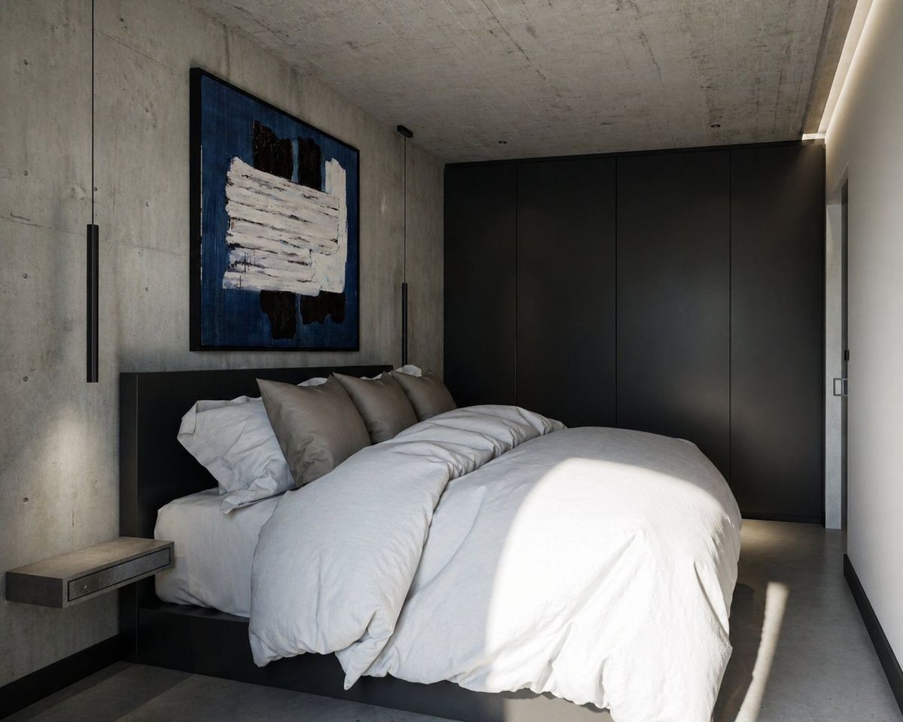
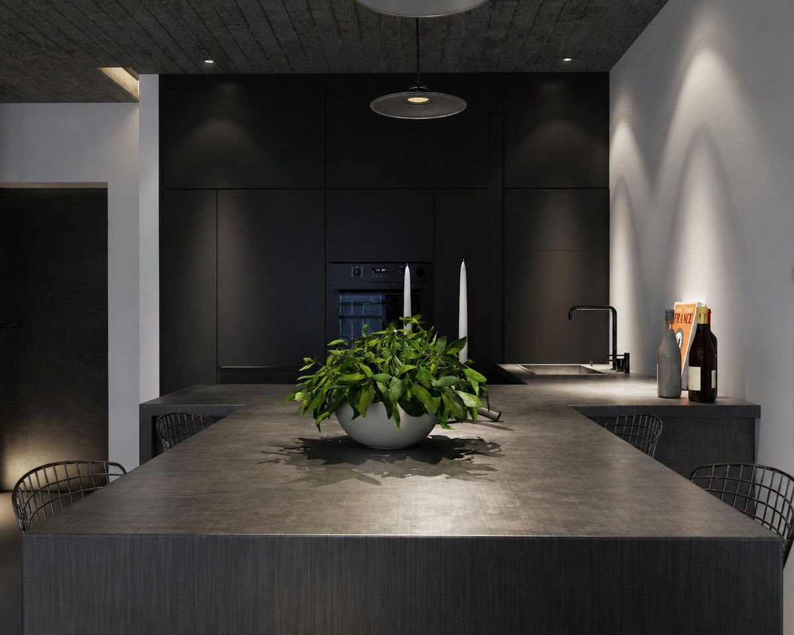
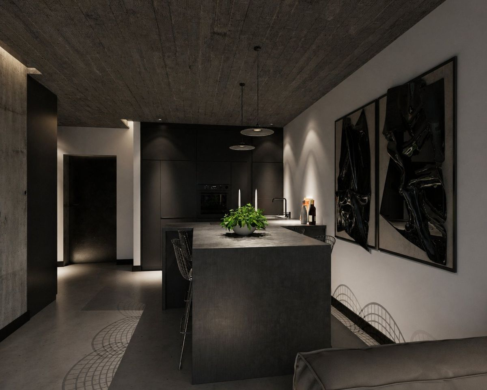
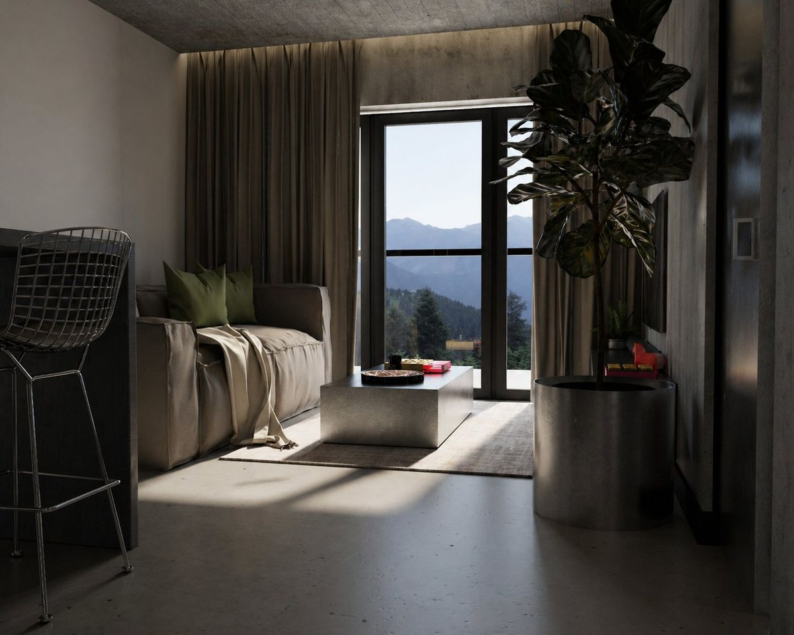
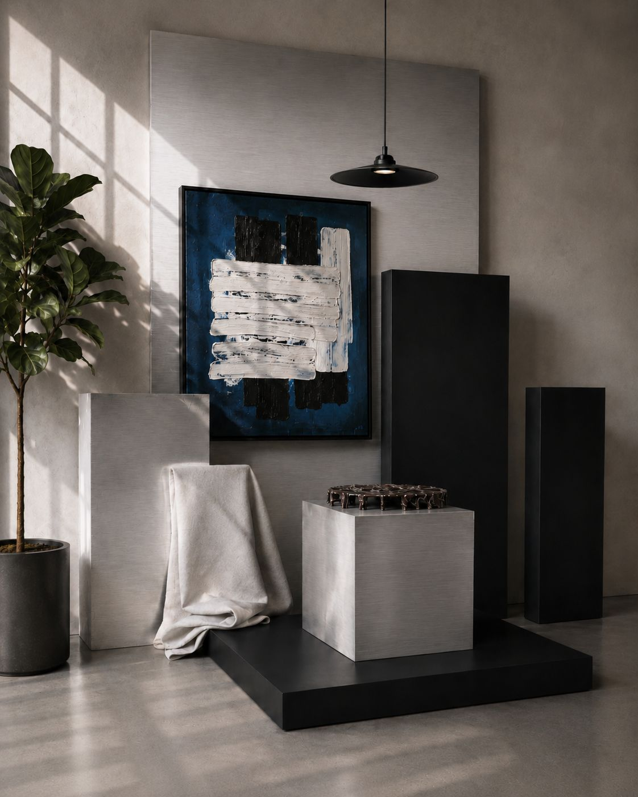

Wnętrze oparte na trzech decyzjach: beton, który niesie ciężar, czarna bryła, która trzyma napięcie, i jeden kierunek światła, który robi resztę. Nic w tym mieszkaniu nie zabiega o uwagę osobno. Kompozycja działa, bo każda płaszczyzna wie, czym jest, i przy tym zostaje.
Chciałem stworzyć spokojne wnętrze apartamentu, w którym surowy beton i ciemna zabudowa współistnieją z poczuciem domowego komfortu. Punktem wyjścia była oszczędna paleta materiałów, duże płaszczyzny i światło podkreślające ich fakturę. Miękkie tekstylia oraz sztuka nadają tej architekturze bardziej osobisty charakter.
Najważniejsze było zachowanie równowagi między ciężarem materiałów a lekkością przestrzeni. Przy rozległych betonowych powierzchniach i czarnych bryłach łatwo o zbyt chłodny, przytłaczający efekt. Jasne tkaniny, naturalne akcenty i światło dzienne łagodzą kontrasty, a ograniczona liczba dodatków pozwala zachować porządek kompozycji.
Opracowałem koncepcję wnętrza, zestawienie materiałów i kolorów oraz kierunek oświetlenia. Przygotowałem moodboard i wizualizacje 3D pokazujące relacje między zabudową, wyposażeniem, sztuką i światłem. Kadry prezentują zarówno całość kompozycji, jak i detale budujące jej charakter.
Galeria





Kontakt
Odpowiadam na każdą wiadomość osobiście. Im więcej napiszesz o przestrzeni, o tym, gdzie się znajduje i jak ma działać, tym konkretniejsza będzie moja odpowiedź.
studio@stankiewicz.design